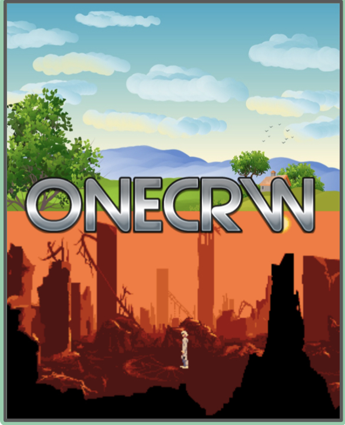

Reem Alrowili / July 25th, 2021
Cryptography is a huge part of our lives. It affects us in many ways, in order to understand how it affects us we must understand how it works and what it is. Cryptography can be defined as: transforming a plaintext into a cipher that can only be decrypted with a key. It’s a process that involves storing and transferring data in a way that only allows the person it is meant for to read.
Cryptography has made my life much easier, The use of it is everywhere. It prevents criminals from reading my communications and possibly stealing money or leaking private information, as it provides safety to its best. The modern world fundamentally relies on cryptography. Encryption makes many things in our everyday lives possible by adding confidentiality, like making a phone call, buying something with a credit card and online payments, such as apple pay.
Like everything else cryptography has it’s advantages and disadvantages. Whether it’s positive or negative depends on how and why you use it.
Firstly Let’s highlight some of the positives of cryptography. a cryptanalyst/codebreaker by the name of Elizebeth s. Friedman alongside her husband William f. Friedman were responsible of directing an unofficial code-breaking team that was hired by the national Government, during world war I. She has also managed to decrypt codes used by well-known criminals and bring them down. Another advantage of cryptography is keeping important information Secure. For instance, your credit card information, your phone calls, and the list goes on.
Now Here’s how using it can be negative. When it’s used by criminals to encrypt their communication in order to avoid being incriminate, much the same as the high- profile criminals elizebeth friedman took down. Cryptography can be very time consuming as well. it could be a while before your able to crack the code, or Even create the code.
Finally to sum up everything, we can safely say that cryptography is a prominent part of our lives. Had it not existed our lives would be much different than what it is right now. We just have to be careful due to the fact that it can be vulnerable if it's not done or being used right.
Thank you all for reading, I hope you enjoyed it.
https://www.slideshare.net/sagarjanagonda/cryptography-24893139
https://time.com/5928583/elizebeth-friedman-codebreaker/
https://www.bbc.com/news/technology-24667834
https://economictimes.indiatimes.com/definition/cryptography
Reem Alrowili / july 26th, 2021
Have you ever been surfing the web and all of a sudden you see an ad about something you showed interest in before? The answer is most likely yes. Your probably wondering why that is, well that’s exactly what we are going to talk about. First off how dose your Device know what to recommend for you. It’s due to machine learning.
Machine learning takes any kind of data and starts to recognize patterns in the data and ultimately makes decisions without being programmed. Like speech Recognition. I’m sure many if not all of you used it before. Your device take the data (that is your speech) and process it into written text.
I pretty much search everything on the internet. So I’m always recommended many things whether It’s an ad for a bag I liked on an app like Instagram or YouTube. Or it could be a website I might be interested in, maybe a YouTube video. Now those recommendations may be wrong as a result of bias. Bias is when a machine is influenced in an unfair way either intentionally or not.
However there are ways that unfairness can be addressed. First things first make sure your data is complete, if your data is complete than the bias is probably caused by humans. Here are some measures that can be taken to help. First ask yourself two question. One, if you have collected enough data to accurately train your computer. Two, is this data being inclusive of all possible scenarios and users. Second you should have a full understanding of the algorithms and data. Third you should come up with a debiasing way.
In class we where asked to create a model using a teachable machine. Me and a couple of amazing girls were paired together, we got to working and thought of a great idea to use for our teachable machine.
We collected photos of foods that were relatively similar, like regular gummy bears and organic gummy bears, a normal cheeseburger and a veggie burger, dairy free ice cream and ice cream that has dairy in it. Then we trained our machine to tell them apart so when you show it a picture of a burger it will tell you whether it’s veggie burger or a cheeseburger.
The purpose of this model is to help you make better decisions no matter the reason. You might be allergic to some foods, you could be lactose intolerant, or overall just trying to be healthy and get fit. Either way this machine got your back.
https://youtu.be/KHbwOetbmbs
https://youtu.be/x2mRoFNm22g
https://www.ibm.com/cloud/learn/speech-recognition
https://research.aimultiple.com/ai-bias/
Reem Alrowili july 28th, 2021
The video below is a tutorial on how to get started with HTML and CSS for beginners. This is a really easy and an informative video if you want to learn HTML but don’t know where to start.
I Hope You Like It!
Reem Alrowili august 3rd,2021
On July 30th our topic for the it girls course was, women in video games. Our incredible guest presenter racquel Gonzalez, challenged us to create a game about how could climate change impact different neighborhoods and areas around the world. It will be showcased in their upcoming exhibit one climate, one planet at the strong national museum of play . We were also given a game to take inspiration from, which was ROBLOX.
First we had to come up with a name for our game, then a main goal, add features as well and last but certainly not least add our own personal touch.
The name of our game is “ONECRW”
The purpose of the game is to bring awareness to climate change and increase self accountability, by having the players experience life in different locations of the world and seeing how their individual actions affect others and the environment. we hope ultimately it will teach the player to not be selfish and understand that their decisions don't only affect them. Players can actively advance their home and the environment that they live in to make it more habitable.
- multiplayer.
- Decision making.
- Open-world.
- Different servers.
- Character building.
Now that I have talked about the main goal and the features of The game, time to talk about how it works.
Players can understand the dangers of climate change by experiencing life in different places and also being affected by the neighbors.
Choose where you can build your home (heavily impacted by climate) and how eco-friendly your home/actions will be.
Different islands are affected differently by climate and inspired by different places and the consequences they are now facing: North Pole, Asia, Africa, North America, South America.
Strive to build a home in a good location and learn how to deal/avoid many effects of climate change, such as floods, droughts, wildfires, weird occurrences in weather, etc.
Your actions will directly impact other players as well as the environment in each place of the world.
You can complete quests or missions and earn rewards/scores for doing things such as not littering, preventing someone from pouring harmful chemicals into the oceans, not throwing garbage in the wrong place, etc.
You can lose points by doing things that contribute to the spread of negative climate effects.
The game has multiple levels and objectives you must achieve every objective in order to move onto the next level. if you fail you will have to repeat the level all over again. You will start at level one, which would be choosing your area and build your house so choose wisely.
Then you will move up to level two, get to know the area around you and find three things you can change for the better.